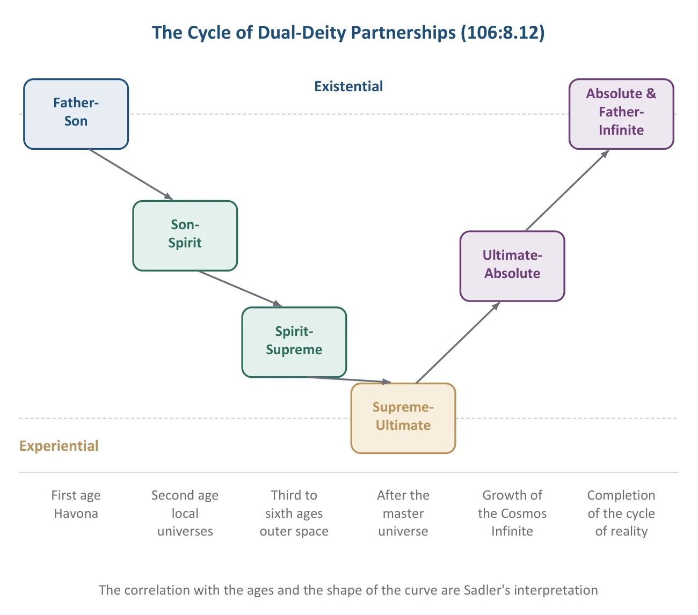

Original: Apéndice V, La Deidad Dual en las edades del universo (pp. 213–220)
Sadler usa el término Deidad Dual (Dual-Deity) para la Deidad que actúa en pareja, a diferencia de la Trinidad, en la que tres quedan unidos en uno. Su fórmula es breve: la Deidad Dual abre camino y la Trinidad consolida. Lee las seis asociaciones nombradas en 106:8.12 —la cadena que va de Padre-Hijo a Absoluto y Padre-Infinito— frente a la sucesión de las edades del universo.
Tanto la asociación Padre-Hijo como la Trinidad del Paraíso existen desde la eternidad pasada.
En los albores de la eternidad, tanto el Padre como el Hijo se hacen infinitamente conocedores de su mutua interdependencia, su eterna y absoluta singularidad8:0.2
Según lee Sadler el orden de los acontecimientos, el Padre-Hijo primero trinidiza al Espíritu Infinito y eterniza Havona, pero es la Trinidad del Paraíso la que lleva la obra a su término. Por eso la creación central es de origen trinitario y está gobernada por seres de origen trinitario.
El mismo patrón se repite en el universo local, obra de un Hijo Creador y un Espíritu Creativo: un logro de la Deidad Dual. ¿Completará también aquí la Trinidad la obra? Sadler cree que sí, y encuentra un indicio en la exposición sobre los Mensajeros Solitarios del documento 23.
¿Es que el gran universo en algún período remoto será administrado más de cerca por seres de origen en la Trinidad mientras que las criaturas de origen único y dual se transferirán hacia los reinos del espacio exterior?23:4.4
Cuando el universo exterior de la frontera queda terminado y se convierte en un universo interior, los pioneros de origen simple y dual pasan a una nueva frontera y los administradores de origen trinitario ocupan su lugar. Un pequeño ejemplo es el papel creciente del Unión de los Días en un universo local una vez que alcanza luz y vida [55:10.1]. Abrir camino y asentar: tal es la división del trabajo entre la Deidad Dual y la Trinidad.
La idea de que las asociaciones de la Deidad Dual se suceden unas a otras no es invención de Sadler; el texto lo afirma expresamente.
La asociación Padre-Hijo se ha vuelto Hijo-Espíritu y luego Espíritu-Supremo y sucesivamente Supremo-Último y Último-Absoluto, aun hasta Absoluto y Padre-Infinito —completándose así el ciclo de la realidad.106:8.12
Sadler hace corresponder las seis con edades y universos. Padre-Hijo pertenece a la primera edad y a Havona; Hijo-Espíritu, a la segunda edad y a los setecientos mil universos locales; Espíritu-Supremo, a los cuatro niveles del espacio exterior. Supremo-Último solo puede funcionar después de que el Último haya emergido, es decir, una vez completado el universo maestro, y las dos últimas quedan aún más lejos en el futuro. El texto da solo la sucesión, no su correlación con las edades, de modo que la correlación es interpretación de Sadler.

Sadler traza una curva a lo largo de esta cadena. Padre-Hijo es la única asociación enteramente existencial. Hijo-Espíritu puede ser existencial en el Paraíso, pero la pareja de Hijo del Universo y Espíritu del Universo en un universo local es experiencial y evolutiva. Espíritu-Supremo es al menos medio experiencial, y Sadler espera que en la práctica sea una colaboración del Ser Supremo con los Espíritus Rectores; en ese caso la pareja sería enteramente experiencial.
Supremo-Último se presenta como la única asociación enteramente experiencial, contrapartida del Padre-Hijo enteramente existencial. Después de ella la cadena vuelve hacia lo existencial. La pareja final, Absoluto y Padre-Infinito, es eterna como la primera y parece no tener ni origen ni culminación. En esta forma circular encuentra Sadler la razón por la que el texto describe la cadena como «completándose así el ciclo de la realidad».
Sadler lee también en esta cadena el deseo de Dios de compartir la iniciativa creadora con Sus coordinados y asociados. En Havona el Padre lleva la iniciativa; en los universos locales los Hijos dirigen con los Espíritus como socios; en el espacio exterior los Espíritus dirigirán con el apoyo del Ser Supremo. Sadler llama a esta sucesión la Procesión de la Iniciativa (Processional of Initiative).
La eterna asociación Padre-Hijo es el arquetipo de toda relación de la Deidad Dual. Trinidiza al Espíritu Infinito, se une con el Espíritu como Trinidad del Paraíso y al mismo tiempo da origen al perfecto universo central. Puesto que Havona es un «acontecimiento eterno», nunca hubo un tiempo en que la gobernaran administradores de origen dual. Los mundos del Padre están regidos por los Secretos Trinidizados de la Supremacía y los mil millones de mundos de Havona por los Eternos de los Días, todos de origen trinitario.
La asociación Hijo-Espíritu concierne al crecimiento evolutivo de universos locales que estuvieron incompletos desde el principio. La primera asociación se completó en la eternidad, en el Paraíso; la segunda avanza hacia su culminación en el tiempo, mediante la evolución. Sadler infiere que al final de la segunda edad esta culminación tomará la forma siguiente:
Así como Padre-Hijo trinidizó a una Deidad igual, el Espíritu Infinito, y encontró su culminación en la Trinidad del Paraíso, así Hijo-Espíritu ha de completarse por un acto semejante; tal es la simetría que ve Sadler. Los cuatro puntos son inferencias suyas y no afirmaciones del texto, cuyo único apoyo es la cautelosa opinión, señalada antes a partir de 56:7.7, de una nueva «expresión de identidad de creador-asociado».
Una vez formada, una asociación de la Deidad Dual no llega a su fin. Padre-Hijo sigue actuando como fuente de los Hijos Creadores después de cerrada la primera edad, e Hijo-Espíritu continúa en nuevas parejas en los universos exteriores. Las asociaciones no se reemplazan; se acumulan.
Sadler detecta una relación dual más en la segunda edad. A un lado está la Deidad trina del Paraíso, eternamente una en la Trinidad del Paraíso; al otro, el conjunto entero de los Creadores Supremos. El texto llama al Ser Supremo el sintetizador de «la Deidad triuna Paradisiaca en asociación experiencial con los Creadores Supremos del tiempo y del espacio» [0:7.9]. Sadler espera que los Creadores Supremos, tomados colectivamente, hagan evolucionar una sola realidad de Deidad destinada a ocupar su lugar dentro de la primera Trinidad experiencial, y lee la relación entre ese colectivo y la Trinidad del Paraíso como una forma de Deidad Dual.
La asociación Espíritu-Supremo difícilmente puede funcionar en la edad presente, puesto que el Ser Supremo aún no se ha actualizado como Deidad. Sadler la llama la primera asociación enteramente futura de la cadena. El texto no dice casi nada sobre esta pareja, pero habla más de una vez de la estrecha relación entre el Espíritu Infinito y el Supremo.
El Espíritu Infinito como Actor Conjunto funciona de muchas maneras que compensan la condición incompleta de la Deidad evolutiva y sostiene relaciones muy estrechas con el Supremo.116:4.2
Los Siete Espíritus Rectores participan de esta cercanía, sobre todo el séptimo, que habla por el Supremo. Sadler infiere que el Ser Supremo colaborará con los Espíritus Rectores a lo largo del despliegue trascendental de los cuatro niveles del espacio exterior, y prevé que esta colaboración multiplicará por siete la diversidad creadora en cada paso.
| Nivel espacial | Clases de diversidad | Cálculo |
|---|---|---|
| Superuniversos | 7 | 7 |
| Primer nivel espacial | 49 | 7×7 |
| Segundo nivel espacial | 343 | 7×7×7 |
| Tercer nivel espacial | 2.401 | 7×7×7×7 |
| Cuarto nivel espacial | 16.807 | 7×7×7×7×7 |
El original imprime la cifra del tercer nivel espacial como 2.041; puesto que siete a la cuarta potencia es 2.401, el número se corrige aquí. La diversidad séptuple de los superuniversos se apoya en la afirmación del texto de que los Espíritus Rectores expresan «las siete asociaciones posibles de la Deidad Triuna» [16:3.1]; la multiplicación más allá de ese punto es diseño propio de Sadler.
Las dos asociaciones anteriores se completaron por trinidización. ¿Se completará Espíritu-Supremo de la misma manera? Sadler cree que no. La emergencia de Dios el Último resulta de la unificación de la primera Trinidad experiencial [106:4.2], no de una unión del Espíritu y el Supremo. El fruto de esta colaboración es más bien el crecimiento continuado del Supremo en niveles trascendentales, como preparación para formar parte de la segunda Trinidad experiencial.
Las tres restantes pertenecen al tiempo posterior a la terminación del universo maestro. Supremo-Último se asemeja a Padre-Hijo: cada una se completa con una trinidización de Deidad y da origen a una nueva Trinidad. De Padre-Hijo surgieron Dios el Espíritu y la Trinidad del Paraíso; de Supremo-Último, en el esquema de Sadler, surgirán Dios el Absoluto y la tercera Trinidad experiencial. Último-Absoluto atiende al crecimiento continuo del Cosmos Infinito, y Absoluto y Padre-Infinito es una relación del futuro eterno que puede llegar a realizarse o no.
En una nota a pie de página Sadler señala que tres de las siete triunidades contienen una Deidad Dual. La segunda, la triunidad del poder-modelo, tiene a Padre-Hijo como primer miembro, y la tercera, la triunidad espíritu-evolucional, tiene a Hijo-Espíritu. De la tercera triunidad dice el texto que «el Hijo-Espíritu funciona como espíritu activo creador» [104:4.21]. La cuarta, la triunidad de la infinidad energética, introduce una pareja no vista antes: Padre-Espíritu. Sadler relaciona esta pareja con Solitarington, la esfera de estado de los seres de origen Padre-Espíritu; aunque el Padre quizá no haya tenido parte en su creación, «en esta era universal él tiene que ver con su función» [13:1.16].